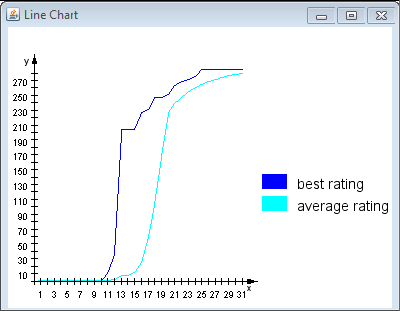

| Darstellungsformen :: Graph des Fortschritts |
|
Wurde ein Optimierungsverfahren gestartet, kann im Graph gesehen werden, wie sich die Bewertungen der erstellten Lösungen entwickeln. Die X-Achse repräsentiert den Verlauf der Generationen. Die Y-Achse steht für den Bewertungswert laut Bewertungsfunktion. Die dunkelblaue Linie stellt die Bewertung der jeweils besten Lösung einer Generation dar. Die hellblaue Linie ist der durchschnittliche Bewertungswert einer Generation.  Liniendiagramm für die Bewertung der erstellten Lösungen |